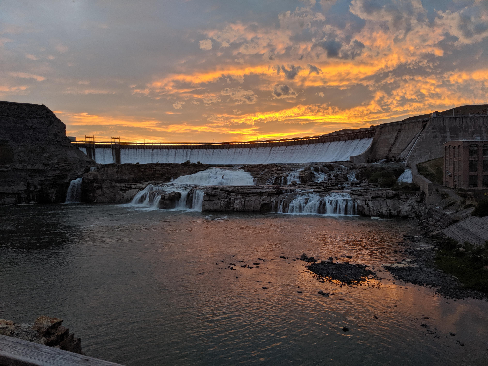

Welcome to the Great Falls Chapter of Al-Anon. We are a support group for families and friends of alcoholics. Our mission is to provide a safe and supportive environment for those affected by someone else's drinking.
We hold regular meetings every week. Please check this schedule for the latest information on meeting times and locations.
Times Square, 520 Central Avenue, Great Falls, MT 59401
Central Christian Church, 1019 Central Avenue, Great Falls, MT 59401
Times Square, 520 Central Avenue, Great Falls, MT 59401
West Side Global Methdoist Church, 726 Central Avenue West, Great Falls , MT 59401
Times Square, 520 Central Avenue, Great Falls, MT 59401
First Presbyterian Church, 1315 Central Avenue, Great Falls, MT 59401
Church of Incarnation, 600 3rd Ave N, Great Falls, MT 59401
If you have any questions or would like to get in touch with us, please feel free to contact us at place-holder@gmail.com.